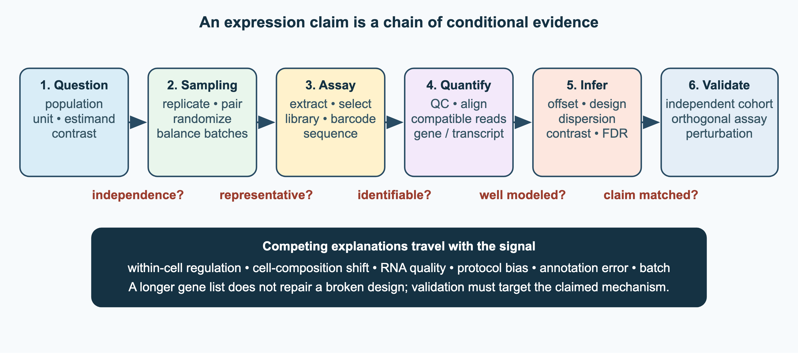
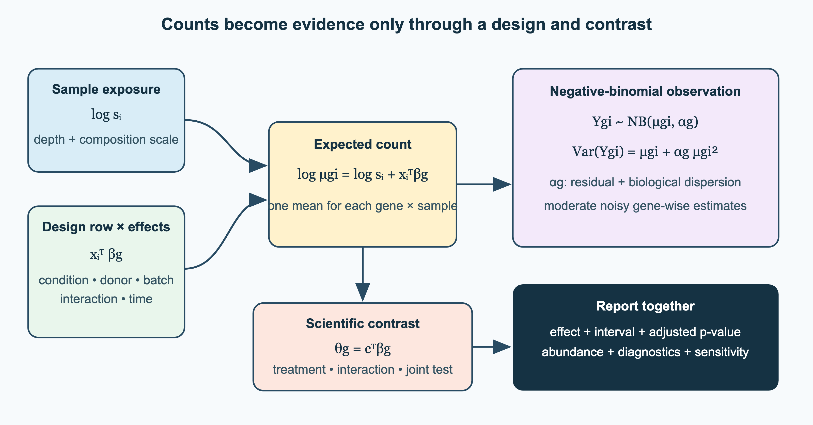
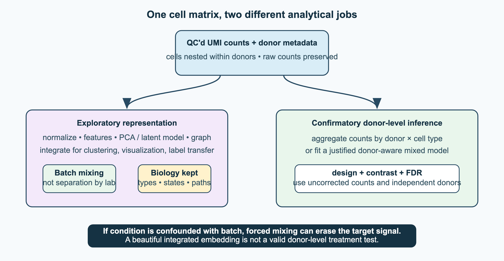

7 Expression analysis
Expression analysis of genes and proteins: methods, algorithms, statistics.
7.1 Overview
Measuring which genes are expressed, and how much, links the genome to the phenotype. Expression analysis was the first area of genomics to produce large, quantitative data sets about many genes in many samples. It forced biologists to confront statistical problems that are now everywhere: normalisation, multiple testing, batch effects and the exploration of high-dimensional data. This chapter follows the development from microarrays to single-cell and spatial methods:
- microarrays, their preprocessing and what they taught us (Section 7.2);
- RNA-seq: library preparation, experimental design, quality control, spliced alignment, transcript assembly, quantification and normalisation (Section 7.3);
- statistics: the general statistical background, differential expression with count models, design matrices and contrasts, multiple testing, dimensionality reduction, clustering and its validation, and classification with many genes and few samples (Section 7.4);
- interpretation: what a change in expression means, gene set analysis, co-expression and eQTLs, and the relation between mRNA and protein levels (Section 7.5);
- single-cell genomics: technologies, analysis, integration, pseudobulk testing, multimodal and spatial data, foundation models and cell types (Section 7.6);
- single-cell sequencing of cancer and tumour evolution (Section 7.7).
The databases that archive expression data are described in Section 2.8, and the measurement of proteins in Chapter 8.
7.2 The first genome-wide methods: microarrays
Microarrays were the first genome-wide expression measurements, and most of the ideas still used to analyse expression data, from normalisation to multiple testing, were developed for them. Before the 1990s, expression was measured one gene at a time, for example with Northern blots, or sampled by sequencing expressed sequence tags (ESTs). Two approaches made it possible to measure all genes at once: counting short sequence tags, as in serial analysis of gene expression (SAGE) (Velculescu et al. 1995), and hybridisation to DNA microarrays. Microarrays dominated expression profiling for about 15 years.
7.2.1 Principle
A DNA microarray is a solid surface with thousands to millions of spots (features), each containing many copies of a DNA probe for one transcript. RNA from a sample is converted to labelled cDNA or cRNA and hybridised to the array. Each labelled molecule binds to the probe with the complementary sequence, and the fluorescence intensity of each spot is a measure of how abundant that transcript was in the sample. The relation is monotonic but not simply proportional: background dominates at low abundance, the signal saturates at high abundance, and each probe has its own binding affinity. Intensities are therefore relative measures, best compared for the same probe between samples. Three technologies dominated:
- Spotted cDNA arrays, developed in Patrick Brown’s laboratory at Stanford, were made by robotically printing PCR products onto glass slides (Schena et al. 1995). They were usually used in two-colour experiments: two samples, labelled with different dyes (Cy3 and Cy5), were hybridised to the same array, and the result was the ratio between them. Because they could be built in academic laboratories, they spread rapidly.
- Affymetrix GeneChips were made by synthesising short (25-nucleotide) oligonucleotides directly on the chip with photolithography, the technique used to make computer chips (Fodor et al. 1991; Lockhart et al. 1996). Each gene was measured with a probe set of about 11–20 different probes, each with a mismatch control probe that differed in the central base. These were one-colour arrays, each measuring one sample. The industrial process was highly reproducible, and they became the most widely used platform.
- Illumina BeadArrays use a different principle. Probes are attached to microscopic beads, which are randomly distributed in wells etched in a fibre-optic bundle or a glass slide. Since the position of each bead is random, the array is decoded after manufacture by a series of hybridisations that identify which probe each bead carries (Gunderson et al. 2004). Each probe is present on many beads, which gives built-in replication. BeadArrays were used for expression profiling (Kuhn et al. 2004) and, above all, for SNP genotyping: most genome-wide association studies (GWAS) used Illumina bead arrays that measure up to millions of single-nucleotide polymorphisms (SNPs) per sample.
7.2.2 Preprocessing and normalisation
The raw data from an array are images, and many steps are needed before intensities can be compared between genes and samples (Quackenbush 2001):
- Image analysis: locating the spots and estimating their intensity and the local background.
- Background correction: removing the signal from non-specific hybridisation and the optical background.
- Transformation: working on the logarithmic scale, usually \(\log_2\), because intensities span several orders of magnitude, errors are roughly multiplicative, and fold changes become differences.
- Normalisation: removing systematic differences between arrays or dyes, caused by differences in the amount of RNA, labelling efficiency or scanner settings. For two-colour arrays, the log-ratio \(M = \log_2(R/G)\) is plotted against the average log intensity \(A\) (an MA plot), and a curve fitted with local regression (loess) is subtracted, so that most genes have \(M\) close to zero. For one-colour arrays, quantile normalisation forces all arrays to have the same distribution of intensities (Bolstad et al. 2003).
- Summarisation: for Affymetrix arrays, combining the probes of a probe set into one expression value. The robust multi-array average (RMA) fits a model across arrays that accounts for probe-specific affinities, and ignores the mismatch probes, which turned out to measure specific signal as well as background (Irizarry 2003).
These steps are not just technicalities. Normalisation methods assume that most genes do not change between samples. This assumption fails in some experiments, and the choice of method can change the results. The same assumption returns in RNA-seq normalisation (Section 7.3.4).
7.2.3 What microarrays showed, and their limitations
Microarrays made it possible to ask questions about whole transcriptomes. Clustering genes by their expression profiles showed that genes with related functions are co-expressed (Eisen et al. 1998). Expression profiles could classify cancers: acute leukaemias could be told apart by expression alone (Golub et al. 1999), breast tumours fell into molecular subtypes with different prognoses (Perou et al. 2000), and a 70-gene signature predicted the outcome of breast cancer (Veer et al. 2002) and became a clinical test. Atlases of expression across tissues showed which genes are ubiquitous and which are tissue-specific (Su et al. 2004). These experiments also raised the statistical problems discussed in Section 7.4: how to test thousands of genes with few replicates, for which empirical Bayes methods such as limma were developed (Smyth 2004), and how to control false discoveries.
The early years also showed how easily such experiments go wrong. Results were hard to reproduce between laboratories and platforms until reporting standards (Minimum Information About a Microarray Experiment, MIAME; Brazma et al. (2001)) and large comparison studies (MAQC Consortium 2006) were established. Microarrays also have built-in limitations:
- they can only measure transcripts whose sequences are known and represented on the array;
- signals are affected by cross-hybridisation of similar sequences and by probe-specific affinities, so intensities of different genes cannot be compared directly;
- the dynamic range is limited by background at the low end and saturation at the high end;
- they cannot easily distinguish isoforms, detect new transcripts or measure allele-specific expression.
RNA-seq (Section 7.3) removed most of these limitations and replaced microarrays for expression profiling from about 2010. Arrays remain in use for genotyping and DNA methylation profiling, where they are cheap and robust.
See also: further explanation in Section D.7.1; related Wikipedia articles in Section E.7.1.
Parts of this section are adapted from the Wikipedia articles DNA microarray, Gene expression profiling, Serial analysis of gene expression, Quantile normalization and MA plot (CC BY-SA 4.0, retrieved 4 October 2026).
7.3 RNA sequencing
RNA-seq measures expression by sequencing cDNA made from the RNA in a sample and counting the reads that come from each gene or transcript. It was introduced in 2008 (Mortazavi et al. 2008; Nagalakshmi et al. 2008), shown to agree well with microarrays while being more reproducible and sensitive (Marioni et al. 2008), and quickly became the standard (Wang et al. 2009; Stark et al. 2019). Because it does not depend on predefined probes, RNA-seq can discover new genes and transcripts, measure isoforms, detect allele-specific expression, fusion genes and RNA editing, and be used in any organism, with or without a reference genome. Its dynamic range is limited mainly by the sequencing depth. This section follows an experiment from the library and the design, through the analysis steps, to the normalisation that prepares counts for statistical testing.
7.3.1 Library preparation
Most of the RNA in a cell is ribosomal. To sequence mRNA, either polyadenylated RNA is selected with oligo(dT), or rRNA is depleted, which also keeps non-polyadenylated RNAs. The RNA is fragmented, reverse transcribed into cDNA, ligated to adapters and amplified. Strand-specific protocols record which strand the transcript came from, which matters where genes overlap on opposite strands. Typical experiments use 20–50 million short reads per sample for gene-level analysis (citation needed). Long-read sequencing (Section 5.2) reads entire transcripts and is increasingly used to define full-length isoforms.
7.3.2 Experimental design
The most important design decision is the number of biological replicates. The key concept is the experimental unit: the smallest unit that is independently assigned to (or sampled from) a condition, such as an animal, a patient or an independently grown culture. Biological replicates are different experimental units in the same condition, and they capture the natural variation between individuals. Technical replicates are repeated measurements of the same unit, for example the same RNA sequenced in two libraries or two lanes; they measure only the noise of the protocol. Biological replicates vary much more than technical ones, and a conclusion about a condition can only be assessed relative to biological variation. Treating technical replicates, or several samples from the same individual, as independent biological replicates is called pseudoreplication and gives far too many significant results. Replicate numbers matter more than often assumed. In a yeast experiment with 48 replicates per condition, three replicates found only 20–40% of the differentially expressed genes, and the authors recommended at least six replicates, and at least 12 when changes of all sizes matter (Schurch et al. 2016). Once each library has adequate coverage, more biological replicates add more power than deeper sequencing (citation needed).
Good design also controls confounding. Technical batch effects (different days, operators, reagent lots or sequencing runs) can be larger than the biological differences of interest (Leek et al. 2010). If all control samples are processed in one batch and all treated samples in another, batch and condition are confounded, and no statistical method can separate them. The remedies are classical: randomise the assignment of samples to conditions and to processing order; block, by processing equal numbers of samples from each condition in every batch, so that batch can be included as a covariate in the model (Section 7.4.3); and use paired designs where possible, for example tumour and normal tissue from the same patient, or before and after treatment in the same individual, so that the comparison is made within each individual and differences between individuals cancel out. Such design decisions must be made before the experiment; they cannot be repaired in the analysis. With the design fixed, the data pass through a standard series of analysis steps.
7.3.3 The analysis workflow
A standard analysis has six steps (Conesa et al. 2016):
- Quality control of the reads: base qualities, adapter content, duplication and rRNA contamination.
- Alignment or quantification, described below.
- Counting reads per gene, or estimating abundances per transcript.
- Normalisation for sequencing depth and composition.
- Exploratory analysis, such as PCA and clustering, to detect outliers and batch effects (Section 7.4.6).
- Statistical testing for differential expression, and interpretation with gene sets and pathways (Section 7.5).
Each step rests on assumptions, and an observed difference can have several explanations besides regulation within cells: a change in cell composition, poor RNA quality, protocol bias, errors in the annotation or a batch effect (Figure 7.1). A longer gene list does not repair a flawed design. The subsections below cover quality control, alignment, assembly and quantification; normalisation follows in its own subsection.

Quality control
Quality control is a diagnosis of how the data were generated, not an automatic filter. Before alignment, base qualities, adapter content, over-represented sequences and per-cycle base composition are checked (Section 5.6). After alignment, the useful statistics are specific to RNA: the fraction of uniquely mapped reads, the fractions of ribosomal and mitochondrial reads, strand specificity, splice-junction support and the coverage along gene bodies. Degraded RNA gives a characteristic 3′ bias in poly(A)-selected libraries, since only fragments still attached to the poly(A) tail are captured. At the level of samples, PCA, sample correlations and clustering show whether samples group by condition or by processing batch, and genotypes called from the reads can confirm that each sample comes from the expected individual. An outlying sample is a reason to investigate, not to exclude. Exclusion rules should be decided before the results are known, and conclusions checked with and without doubtful samples. The SEQC/MAQC-III consortium sequenced reference RNA mixtures at many sites and showed that platform, site, expression level and analysis pipeline all affect the results, while relative expression measures were reproducible across sites (“A Comprehensive Assessment of RNA-Seq Accuracy, Reproducibility and Information Content by the Sequencing Quality Control Consortium” 2014).
Spliced alignment
RNA-seq reads come from spliced transcripts, so a read that spans an exon–exon junction aligns to the genome in two parts separated by an intron, which may be tens of kilobases long. Ordinary DNA read mappers (Section 5.6) cannot handle this. TopHat first mapped reads that align without gaps, predicted junctions from them and then aligned the remaining reads across those junctions (Trapnell et al. 2009). STAR searches for the longest prefix of the read that matches the genome exactly (the maximal mappable prefix) using an uncompressed suffix array, then repeats the search for the rest of the read, and stitches the pieces together (Dobin et al. 2012). It is very fast but needs about 30 GB of memory for the human genome. HISAT2 uses a hierarchical graph FM-index (a compressed index based on the Burrows–Wheeler transform) and needs much less memory (Kim et al. 2019).
Transcript assembly
Alignments can be used to reconstruct the transcripts themselves. Reference-guided assembly, with Cufflinks (Trapnell et al. 2010) or StringTie (Pertea et al. 2015), builds a graph of overlapping alignments for each gene and finds a small set of transcripts that explain the reads, which can reveal new isoforms. Cufflinks chose the most parsimonious set, a minimum path cover of the overlap graph; StringTie instead assembles transcripts one at a time as maximum flows through a splice graph. In organisms without a reference genome, transcripts are assembled de novo with de Bruijn graph methods such as Trinity (Grabherr et al. 2011) (Section 5.3).
Quantification and pseudo-alignment
The simplest quantification counts the reads that overlap each gene. Estimating the abundance of individual transcripts is harder, because isoforms of the same gene share most of their exons, so many reads are compatible with several transcripts. RSEM solves this with the expectation–maximisation (EM) algorithm: it alternates between assigning each read fractionally to transcripts in proportion to their current abundance estimates, and re-estimating the abundances from these assignments (Li and Dewey 2011).
Aligning every read base by base is not necessary for quantification. It is enough to know which transcripts a read is compatible with. kallisto introduced pseudo-alignment: it builds a de Bruijn graph of the transcriptome, looks up the k-mers of each read, and intersects the sets of transcripts that contain them (Bray et al. 2016). Reads with the same set of compatible transcripts form an equivalence class, and the EM algorithm then runs on the counts of these classes. Salmon uses a similar lightweight mapping and models sequence-specific, fragment-GC and positional biases (Patro et al. 2017); later versions score the candidate alignments (selective alignment) to reduce false mappings (Srivastava et al. 2020). These methods are one to two orders of magnitude faster than alignment and similarly accurate for known transcripts, but they cannot discover new ones.
Long-read RNA-seq
Short reads cover only a small part of a transcript, so the full isoform must be inferred by assembly or by EM, and different combinations of exons far apart in the same gene are hard to resolve. Long-read platforms (PacBio and Oxford Nanopore; Section 5.2) can sequence complete cDNA molecules, and nanopore sequencing can also read native RNA directly. Each read then shows one full-length isoform, with its exact combination of exons, its start and end sites and its poly(A) tail, so no assembly is needed. Reads are aligned to the genome with spliced aligners such as minimap2 (Li 2018), and grouped into known and new transcripts. This has made long reads the method of choice for transcript discovery and for building isoform catalogues. A community benchmark found that longer, more accurate reads give more accurate transcript models, while read depth matters more for quantification (Pardo-Palacios et al. 2024). The drawbacks are fewer reads per sample; higher error rates on some platforms (notably direct RNA sequencing), which make exact splice sites harder to call; truncated reads from degraded RNA; and a bias towards shorter molecules. Short reads are therefore still often used for quantification, sometimes in combination with long reads.
7.3.4 Normalisation
Raw counts are not comparable between genes or samples. Longer transcripts produce more fragments, and samples sequenced more deeply produce more reads. A gene with twice as many reads as another is therefore not necessarily twice as highly expressed. Several units correct for these effects:
- CPM (counts per million) divides by the library size and corrects for depth only.
- RPKM/FPKM (reads or fragments per kilobase of transcript per million mapped reads) also divides by the transcript length (Mortazavi et al. 2008).
- TPM (transcripts per million) first divides each count by the transcript length, and then scales so that the values in each sample sum to one million: \[ \text{TPM}_i = \frac{c_i / \ell_i}{\sum_j c_j / \ell_j} \times 10^6, \] where \(c_i\) is the count and \(\ell_i\) the effective length of transcript \(i\). TPM estimates the relative molar concentration of each transcript and, unlike RPKM, sums to the same total in every sample (Wagner et al. 2012).
These units do not handle composition bias. RNA-seq data are compositional: a library contains a fixed number of reads sampled from the RNA in it, so the counts measure each gene’s share of the library, not its absolute amount. If a few genes are very highly expressed in one sample, they take up a large share of the reads, and all other genes appear lower even if their true expression is unchanged. Methods for differential expression therefore estimate normalisation factors under the assumption that most genes are not differentially expressed:
- TMM (trimmed mean of M-values), used by edgeR, computes the weighted mean of log-ratios between a sample and a reference sample after trimming the most extreme genes (Robinson and Oshlack 2010).
- The median-of-ratios method of DESeq computes, for each gene, the ratio of its count to the geometric mean of its counts across all samples. The median of these ratios in a sample is its size factor (Anders and Huber 2010; Love et al. 2014).
This assumption can fail. If the total amount of mRNA per cell changes, for example when a transcription factor such as MYC raises the expression of most genes, every gene’s share of the library stays about the same, and all of these normalisations wrongly conclude that little has changed (Lovén et al. 2012). Detecting such global shifts requires an external reference, such as synthetic spike-in RNAs added in proportion to the number of cells.
TPM values are useful for comparing the relative abundance of transcripts within a sample. Because TPMs sum to the same total in every sample, they are still proportions, and they do not remove composition effects between samples; they are suitable for descriptive comparisons but are not a general normalisation. For differential expression, tools such as DESeq2 and edgeR take the raw (unnormalised) integer counts as input, not TPM or CPM values, and include the normalisation factors as offsets in the statistical model, described in Section 7.4.2.
See also: further explanation in Section D.7.2; related Wikipedia articles in Section E.7.2.
Parts of this section are adapted from the Wikipedia articles RNA-Seq, Transcriptomics technologies and Expectation–maximization algorithm (CC BY-SA 4.0, retrieved 4 October 2026). Parts of this section are adapted from Matteo Tadiello, Modern Bioinformatics: From Foundations to Frontiers, chapter “Gene-Expression Analysis” (CC BY 4.0), used with permission.
7.4 Testing and statistics
Expression studies measure tens of thousands of genes in a handful of samples. This raises three statistical problems that appear throughout genomics: modelling the variability of the measurements with few replicates, testing thousands of hypotheses at once, and exploring high-dimensional data. The section starts with the general statistical background expected of every student, whatever their topic, and then treats the three problems in turn.
7.4.1 Statistical background
Most bioinformatics results end with a statistical statement: an E-value, a p-value for differential expression, the support for a phylogenetic split, an accuracy on a test set. The examiner expects you to know the basic concepts and their common pitfalls. The Nature Methods Points of Significance series (Statistics for Biologists) covers all of this in two-page articles and is the recommended starting point (Krzywinski and Altman 2013).
Probability and distributions
Be able to explain conditional probability and Bayes’ theorem, \[P(H \mid D) = \frac{P(D \mid H)\, P(H)}{P(D)},\] and use it on a simple example. A classic one: a test for a rare condition (1 in 1000) with 99% sensitivity and 99% specificity still gives mostly false positives. Among 100 000 people, about 99 of the 100 true cases test positive, but so do about 999 of the healthy people, so only about 9% of positive results are true. The same base-rate argument explains why E-values must account for database size (Section 1.4) and why most predicted interactions or binding sites in a genome-wide screen are false.
Know the common distributions and when they arise: the binomial (number of successes in \(n\) trials), the Poisson (rare events, read counts at low coverage), the normal (sums of many small effects), the negative binomial (overdispersed counts, as in RNA-seq; Section 7.4.2) and the extreme value distribution (maxima, as in alignment scores; Section 1.4). Likelihood is the probability of the data given a model, seen as a function of the model’s parameters; maximum-likelihood estimation chooses the parameters that maximise it. It underlies phylogenetics (Chapter 4), the training of hidden Markov models (Section 1.6) and much of machine learning.
Hypothesis tests and p-values
A statistical test compares the data with a null hypothesis. The p-value is the probability, assuming the null hypothesis is true, of observing data at least as extreme as those seen. It is not the probability that the null hypothesis is true, and a large p-value does not show that the null is true. A small p-value says nothing about how large or important an effect is: with enough data, a trivial difference becomes “significant”. Report effect sizes with confidence intervals, not only p-values (Krzywinski and Altman 2013; Nuzzo 2014; Wasserstein and Lazar 2016). A 95% confidence interval comes from a procedure that covers the true value in 95% of repeated experiments; it is not a 95% probability that the true value lies in this particular interval. That statement requires a Bayesian credible interval, which depends on a prior.
The most common tests and their assumptions are:
- the t-test compares means. The one-sample test compares a mean with a fixed value, the two-sample test compares two groups, and the paired test compares two measurements on the same units. It assumes approximately normal data (or large samples) and, in its classic form, equal variances; Welch’s t-test drops the equal-variance assumption and is usually the better default. The test statistic is the difference in means divided by its standard error;
- non-parametric alternatives, such as the Mann–Whitney (Wilcoxon rank-sum) and Wilcoxon signed-rank tests, use ranks and make fewer assumptions, at some cost in power;
- χ² and Fisher’s exact tests for counts in contingency tables, for example enrichment of a Gene Ontology (GO) term in a gene list (Section 7.5);
- correlation (Pearson for linear relationships, Spearman for monotonic ones), and why correlation does not imply causation;
- permutation tests, which build the null distribution by shuffling labels, and are useful when no standard test fits.
A type I error is a false positive, controlled by the significance level \(\alpha\); a type II error is a false negative. Statistical power, the probability of detecting a true effect, depends on the effect size, the variability and the sample size. Too few replicates is the most common reason for unreliable conclusions in genomics experiments. The rest of this section applies these concepts to expression data.
7.4.2 Differential expression
The basic question is which genes change in expression between conditions. A t-test for each gene works poorly. With three replicates per group, the variance of each gene is estimated very imprecisely, and genes that happen to have a small sample variance get spuriously large t-statistics.
Moderated statistics. The solution, developed for microarrays, is to borrow information across genes. In the limma framework (Smyth 2004), an empirical Bayes model treats the true variances of all genes as drawn from a common prior distribution, estimated from all genes together. Each gene’s variance is then shrunk towards the common value. The resulting moderated t-statistic is much more stable. limma remains in use for RNA-seq data through voom, which transforms counts to log counts per million and estimates the mean–variance relationship to give each observation a precision weight (Law et al. 2014).
Count models. RNA-seq produces counts. If the same library were sequenced repeatedly, the count of a gene would follow a Poisson distribution, with variance equal to the mean (Marioni et al. 2008). Between biological replicates, the variance is larger (overdispersion). The standard model is the negative binomial distribution. For the count \(K_{ij}\) of gene \(i\) in sample \(j\), with mean \(\mu_{ij}\),
\[ \operatorname{Var}(K_{ij}) = \mu_{ij} + \alpha_i \mu_{ij}^2, \]
where \(\alpha_i\) is the gene-specific dispersion. For highly expressed genes, the second term dominates, and \(\sqrt{\alpha}\) is the biological coefficient of variation. edgeR (Robinson et al. 2009; McCarthy et al. 2012) and DESeq2 (Love et al. 2014) fit a generalised linear model for each gene, with a log link,
\[ \log \mu_{ij} = \log s_j + \sum_r x_{jr} \beta_{ir}, \]
where \(s_j\) is the normalisation factor of sample \(j\) (Section 7.3.4), \(x_{jr}\) the elements of the design matrix describing the samples (condition, batch, paired individuals) and \(\beta_{ir}\) the coefficients, such as the log fold change between conditions. As in limma, the dispersion of each gene is estimated with shrinkage towards a trend fitted across all genes. DESeq2 also shrinks the fold changes, so that large fold changes of low-count, noisy genes are not over-interpreted. Significance is assessed with Wald or likelihood-ratio tests.

The tests answer slightly different questions. A Wald test divides an estimated coefficient, or a combination of coefficients, by its standard error. A likelihood-ratio test compares a full model with a reduced model without the terms of interest, and is the natural choice when the question involves several coefficients at once, such as any difference between several time points. The quasi-likelihood F-test of edgeR also takes into account the uncertainty in the estimated dispersion, and gives better control of false positives when there are few replicates (Lund et al. 2012; Chen et al. 2016). The test should follow from the question, not be chosen because it gives the most significant genes. Which question a test answers is set by the design matrix and the contrast.
7.4.3 Design matrices, contrasts and interactions
The design matrix has one row per sample and one column per coefficient, and it states which comparisons the model can make. In a paired design, such as treated and untreated samples from the same donors, the model ~ donor + treatment includes one coefficient per donor, so that the treatment effect is estimated within donors, and stable differences between donors are removed. A known batch is added in the same way, as long as it is not confounded with the condition; this is the main way to deal with known batch effects (Leek et al. 2010). If two columns of the design matrix are identical, for example when all treated samples were processed in one batch, the matrix is not of full rank and the two effects cannot be separated. Software that refuses to fit such a model is doing the right thing.
A contrast is a linear combination of coefficients, \(c^T\beta\), that answers one question. In an experiment with two genotypes, A and B, each with and without treatment, the model ~ genotype + treatment + genotype:treatment includes an interaction term. The interaction is a difference of differences:
\[ (\text{B}_\text{treated} - \text{B}_\text{control}) - (\text{A}_\text{treated} - \text{A}_\text{control}), \]
and asks whether the response to treatment depends on the genotype. It is not the treatment effect in either genotype. A common error is to test the treatment in each genotype separately and conclude that the genotypes respond differently because the effect is significant in one and not in the other. The difference between “significant” and “not significant” is not itself significant (Gelman and Stern 2006); a non-significant result may simply reflect low power. Such errors were found in about half of the neuroscience papers that compared two effects in this way (Nieuwenhuis et al. 2011). The correct analysis tests the interaction directly. Contrasts should be written down, in words and as coefficients, before the analysis. All these tests are about changes in the total expression of a gene; changes in its isoforms need a different test.
7.4.4 Differential transcript usage
Differential expression of a gene is not the only kind of change. A gene can switch between isoforms without changing its total expression: differential transcript usage (or exon usage) asks whether the proportions of the isoforms differ between conditions. This requires transcript-level quantification (Section 7.3), whose estimates are uncertain when isoforms share most of their sequence. Quantifiers such as Salmon and kallisto estimate this uncertainty by bootstrapping or Gibbs sampling, and transcript-level estimates can be summarised to genes for gene-level tests, which also improves those tests when isoform usage changes (Soneson et al. 2016). A claim about isoforms should only be made when the reads, for example unique exons or junctions, can actually distinguish them. Whatever the test, it is repeated for thousands of genes or transcripts, and the results must be corrected for multiple testing.
7.4.5 Multiple testing
If 20 000 genes are tested at a significance level of 0.05, about 1000 will be called significant even if nothing changes. Two kinds of error rates are controlled:
- The family-wise error rate (FWER) is the probability of at least one false positive. The Bonferroni correction controls it by testing each of \(m\) hypotheses at level \(\alpha/m\). Holm’s step-down method (Holm 1979) is uniformly more powerful and equally valid. FWER control is appropriate when any false positive is costly, but it is very conservative for genome-scale data (Noble 2009).
- The false discovery rate (FDR) is the expected proportion of false positives among the genes called significant (Benjamini and Hochberg 1995). It is the natural quantity when the result is a list of candidates for follow-up. The Benjamini–Hochberg procedure sorts the \(m\) p-values, \(p_{(1)} \le \dots \le p_{(m)}\), finds the largest \(k\) for which \(p_{(k)} \le \frac{k}{m}\alpha\), and rejects the hypotheses \(1, \dots, k\). This controls the FDR at level \(\alpha\) when the tests are independent or positively correlated. Under arbitrary dependence, the more conservative Benjamini–Yekutieli procedure (Benjamini and Yekutieli 2001) divides \(\alpha\) by an extra factor \(\sum_{i=1}^m 1/i \approx \ln m\).
The FDR is a property of the whole list, and an expected value over repeated experiments, not a statement about individual genes. A list called at FDR 5% is expected to contain about 5% false discoveries, but it does not mean that each gene in it has a 5% chance of being a false positive: genes near the cutoff are much more likely to be false than those with very small p-values.
Storey’s q-value is the smallest FDR at which a gene would be called significant (Storey and Tibshirani 2003). It also estimates the proportion of true null hypotheses, \(\pi_0\), from the flat part of the p-value histogram, which gives more power when many genes change. Efron’s empirical Bayes approach estimates the local false discovery rate, the probability that a particular gene is null given its test statistic (Efron and Tibshirani 2002). The histogram of p-values is a useful diagnostic: under the null hypothesis p-values are uniformly distributed, so a peak near zero indicates true signal, while other shapes indicate problems with the model.
Statistical significance is not biological importance. The p-value depends on the effect size, the variability and the number of replicates, so a large fold change in a noisy, lowly expressed gene may not be significant, while with enough replicates very small fold changes become significant. A volcano plot, the \(-\log_{10}\) p-value against the log fold change, shows both at once. Results are often filtered by both FDR and fold change, but there is no universal cutoff (such as a two-fold change): what matters depends on the gene and the biological question. Filtering on the estimated fold change after testing also undermines the FDR guarantee; it is better to test directly against a minimal relevant fold change, which both limma and DESeq2 allow (McCarthy and Smyth 2009; Love et al. 2014).
Removing genes before testing can increase power, because fewer tests are corrected for. Independent filtering removes genes with too few reads to give a significant result, using a statistic, such as the mean count over all samples, that is independent of the test statistic when the null hypothesis is true (Bourgon et al. 2010). DESeq2 does this automatically. A filter that uses the condition labels, such as keeping only genes that look different between the groups, is not independent and invalidates the FDR.
E-values in sequence searching (Section 1.4) are a built-in multiple-testing correction: they count the expected number of chance hits in the whole database. Be aware also of the hidden forms of multiple testing: trying several analyses and reporting the one that “worked”, testing many subgroups, or choosing thresholds after seeing the data. These practices are a major reason why many published findings fail to replicate (Ioannidis 2005). Testing genes one at a time is only one way to analyse expression data; the next subsections treat the data as a whole.
7.4.6 Dimensionality reduction
Expression data are high-dimensional: each sample is a point in a space with one dimension per gene, and each gene a point in a space with one dimension per sample. Unsupervised methods find structure in these data without using the sample labels. Dimensionality reduction projects the data into a few dimensions that can be plotted and analysed; clustering (Section 7.4.7) groups similar items.
Principal component analysis (PCA) finds the orthogonal directions of largest variance in the data, computed from the singular value decomposition of the centred data matrix (Lever et al. 2017). Plotting samples on the first two or three components shows the main sources of variation. If samples group by processing date rather than by condition, there is a batch effect. PCA is linear, so the first components keep the large-scale structure of the data, and the fraction of variance explained by each component tells how much of the data the plot shows.
t-SNE (Maaten and Hinton 2008) and UMAP (McInnes et al. 2018; Becht et al. 2018) are non-linear methods that place similar points close together in two dimensions. They preserve local neighbourhoods and reveal clusters, which has made them the standard way to visualise single-cell data (Section 7.6). However, distances between clusters, cluster sizes and densities in such plots are not meaningful, and the layout depends on parameters and random initialisation. Two clusters that lie close together, or are joined by a bridge of cells, are not necessarily related by lineage or development, and well-separated islands can be artefacts of the method. They are tools for visualisation, not for quantitative analysis; clustering and trajectory inference should be done on the underlying data, such as the PCA space, not on the two-dimensional embedding (Chari and Pachter 2023).
7.4.7 Clustering and its validation
Clustering groups genes or samples with similar profiles. Three families of methods are common for expression data:
- Hierarchical clustering repeatedly joins the two closest clusters, as in UPGMA (Section 4.3), and produces a tree (dendrogram). Eisen’s heat maps of hierarchically clustered genes and samples became the iconic display of expression data (Eisen et al. 1998).
- k-means partitions the data into \(k\) clusters by alternating between assigning each point to the nearest cluster centre and recomputing the centres. The number of clusters must be chosen, and the result depends on the starting point.
- Co-expression networks connect genes with correlated profiles and are an alternative to clusters. WGCNA (weighted gene co-expression network analysis) raises the correlations to a power instead of applying a hard threshold, finds modules of co-expressed genes and relates them to traits (Langfelder and Horvath 2008).
Clustering always finds clusters. Hierarchical clustering returns a tree and k-means returns \(k\) groups even for random noise. The result depends on choices made before any algorithm runs, so a clustering is a hypothesis to be checked, not a finding in itself (D’haeseleer 2005).
Distance measure. The distance decides what “similar” means. Euclidean distance between two gene profiles is dominated by the absolute level: two highly expressed genes are close even if one rises when the other falls. Correlation distance, \(d = 1 - r\), compares the shape of the profiles: genes that go up and down together are close, whatever their level. With \(1 - |r|\), anticorrelated genes are also grouped together, which may be wanted for a repressor and its targets but mixes opposite responses. Spearman correlation is less sensitive to outliers. The two families are related: for profiles over \(n\) samples that are centred and scaled to unit variance, the squared Euclidean distance is \(2(n-1)(1-r)\).
Scaling. Clustering is done on log-transformed or variance-stabilised values, so that a few very highly expressed genes do not dominate. When genes are clustered by the shape of their response, each gene is standardised (centred and divided by its standard deviation). When samples are clustered, the genes with the largest variance dominate the distance, which is why the analysis is usually restricted to the most variable genes; standardising every gene instead gives the noise of flat, unexpressed genes the same weight as real signal. Strong batch effects become clusters of their own.
Linkage. In hierarchical clustering, the linkage defines the distance between two clusters: the closest members (single), the most distant members (complete) or the average over all pairs (average). Single linkage tends to chain points into long, straggling clusters and is sensitive to noise; complete linkage gives compact clusters of similar diameter; average linkage (UPGMA) lies between them and is common for expression data; Ward’s method joins the pair of clusters that least increases the within-cluster variance and, like k-means, favours compact, spherical clusters. A dendrogram becomes clusters only when it is cut at some height, and the left–right order of its leaves is partly arbitrary, because each node can be flipped. Neighbouring rows in a clustered heat map are therefore not necessarily similar.
How many clusters? There is rarely one correct number. Internal criteria compare the tightness of clusters with their separation. The elbow in the within-cluster sum of squares as a function of \(k\) is often unclear. The gap statistic compares this sum with that of reference data without cluster structure (Tibshirani et al. 2001). The silhouette of a point is \(s = (b - a)/\max(a, b)\), where \(a\) is its mean distance to the other members of its own cluster and \(b\) its mean distance to the members of the nearest other cluster; \(s\) lies between \(-1\) and \(1\), and an average close to zero means that the data have little cluster structure (Rousseeuw 1987). Model-based clustering with Gaussian mixtures can choose \(k\) with a criterion such as BIC.
Validation. Stability is tested by resampling: the samples or genes are subsampled or bootstrapped, the data re-clustered, and pairs of items that are grouped together consistently indicate robust clusters. Consensus clustering summarises this as a matrix of co-clustering frequencies (Monti et al. 2003). Stable clusters can still be artefacts, for example of batch. External validation asks whether the clusters mean something biologically: whether gene clusters are enriched in functional annotation such as GO terms (Gibbons and Roth 2002) (but see the caveats in Section 7.5), or whether sample clusters agree with known labels, measured for example with the adjusted Rand index. The strongest test is that the same clusters appear in an independent data set.
Biclustering. Ordinary clustering groups genes by their behaviour across all samples, but many genes are co-regulated only under some conditions or in some tumours. Biclustering searches for submatrices: subsets of genes with a coherent pattern over subsets of samples. It was introduced to expression data by Cheng and Church in 2000, and many algorithms followed (Madeira and Oliveira 2004). Matrix factorisations, such as non-negative matrix factorisation, address the same problem by letting a gene contribute to several overlapping programmes. Clustering discovers groups; predicting known groups is a different, supervised problem.
7.4.8 Classification with many genes and few samples
Clustering is class discovery; predicting a known class, such as tumour type, response to a drug or survival, is class prediction, a supervised learning problem (Section 12.2). The early leukaemia study did both (Golub et al. 1999). Expression data are extreme for supervised learning: the number of features \(p\) (about 20 000 genes) is far larger than the number of samples \(n\) (often tens to a few hundred), the \(p \gg n\) problem. This has several consequences:
- With more genes than samples, a linear classifier can separate any labelling of the training samples perfectly, including random labels. Accuracy on the training data means nothing.
- Among thousands of genes, many correlate with the outcome by chance.
- Many different gene sets predict equally well, so a signature is not unique. Most random sets of genes are significantly associated with breast cancer outcome, because so many genes correlate with proliferation (Venet et al. 2011).
Models for this situation are simple and regularised: nearest shrunken centroids shrinks each class mean towards the overall mean, and genes for which every class mean is shrunk all the way to it drop out of the classifier (Tibshirani et al. 2002); penalised regression (lasso, elastic net) and linear discriminant analysis with a diagonal covariance matrix are also common (how the penalties work is described in Section 12.2).
The most common error is selection bias. If the genes that best separate the classes are chosen using all samples, and a classifier on those genes is then cross-validated, the test samples have already influenced the model, and the estimated error can be close to zero even for random labels (Ambroise and McLachlan 2002; Simon et al. 2003). Gene selection, and the tuning of any penalty, are part of the model and must be repeated inside each cross-validation fold (nested cross-validation). Even a correctly cross-validated estimate comes from the same cohort, laboratory and platform. A clinical signature needs validation in an independent cohort, and must improve on the established clinical predictors, such as tumour grade and size, not only on chance. A list of genes, whether from testing, clustering or classification, still has to be interpreted biologically (Section 7.5).
See also: further explanation in Section D.7.3; related Wikipedia articles in Section E.7.3.
Parts of this section are adapted from the Wikipedia articles Negative binomial distribution, Multiple comparisons problem, False discovery rate, Hierarchical clustering, K-means clustering, Principal component analysis and T-distributed stochastic neighbor embedding (CC BY-SA 4.0, retrieved 4 October 2026). The statistical background is adapted from Bayes’ theorem, Student’s t-test and p-value. Parts of this section are adapted from Matteo Tadiello, Modern Bioinformatics: From Foundations to Frontiers, chapter “Gene-Expression Analysis” (CC BY 4.0), used with permission.
7.5 From gene lists to biology
A differential expression analysis typically ends with a list of hundreds or thousands of genes. Interpreting such a list gene by gene is impossible, and individual genes are often not significant even when a whole pathway changes modestly. This section first asks what a change in measured expression can mean, then describes how gene lists are interpreted with prior knowledge (gene sets, co-expression and genetic variation), and ends with how mRNA levels relate to protein levels.
7.5.1 What a change in expression means
A difference in the measured amount of a transcript does not by itself show that its transcription has changed. The amount of an RNA, \(M\), is a balance between synthesis and degradation,
\[ \frac{dM}{dt} = k_\text{syn} - k_\text{deg} M, \]
so that at steady state \(M = k_\text{syn}/k_\text{deg}\). A higher level can result from faster transcription, from changes in processing or export, or from slower degradation, and an ordinary RNA-seq experiment cannot tell these apart. Methods that label newly made RNA, or that compare unspliced and spliced reads (as RNA velocity does; Section 7.6), are needed to separate them.
A bulk sample is also a mixture of cell types. The measured expression of gene \(g\) is approximately
\[ A_g = \sum_c \pi_c\, a_{gc}, \]
where \(\pi_c\) is the contribution of cell type \(c\) and \(a_{gc}\) the expression of the gene in that cell type. \(A_g\) can change because the expression within a cell type changes, or because the proportions of the cell types change, for example when a disease leads to an influx of immune cells into a tissue. These are different biological conclusions. Bulk data can be deconvolved into estimated proportions of cell types, using reference expression profiles of purified cells or single-cell data; CIBERSORT, for example, estimates the proportions of immune cell types from tissue expression profiles with support vector regression (Newman et al. 2015). Deconvolution depends on the reference being appropriate for the tissue. Single-cell data separate the two kinds of change directly (Section 7.6).
An expression study is usually exploratory, and its key results should be validated with independent samples or with a different method, such as quantitative PCR, in situ hybridisation, protein measurements or perturbation experiments. Gene set analysis summarises the same data in another way and is not an independent confirmation. Agreement between RNA and protein strengthens an association, but neither shows that the gene causes the phenotype. With these caveats in mind, the standard way to summarise a gene list is to ask which known sets of genes it is enriched in.
7.5.2 Gene set analysis
Gene sets are groups of genes that share a function, a location or a regulatory mechanism: Gene Ontology (GO) terms (Section 2.6), pathways from KEGG or Reactome, targets of a transcription factor or microRNA, or signatures from earlier experiments. The Molecular Signatures Database (MSigDB) collects many such sets, including a small curated “hallmark” collection (Liberzon et al. 2015).
Over-representation analysis (ORA) asks whether a gene set is over-represented among the significant genes. With \(N\) genes in total, \(K\) of which belong to the set, and \(n\) significant genes, of which \(k\) are in the set, the probability of seeing \(k\) or more by chance is given by the hypergeometric distribution (equivalent to a one-sided Fisher’s exact test):
\[ P(X \ge k) = \sum_{i \ge k} \frac{\binom{K}{i}\binom{N-K}{n-i}}{\binom{N}{n}}. \]
Tools such as DAVID made this routine for many annotation types (Huang et al. 2008). ORA is simple, but it ignores the size of the changes and assumes that genes are independent. Two choices are part of the null hypothesis itself, not technical details. The first is the background (the universe of \(N\) genes): it should be the genes that were actually measured and could have been detected, not the whole genome. With the whole genome as background, any set of genes expressed in the tissue studied looks enriched, simply because unexpressed genes could never have been selected. The second is the threshold that defines the gene list: changing the FDR or fold-change cutoff changes \(n\) and \(k\), and can change which sets are significant. Results that hold only for one background or one threshold should be treated with caution. Since thousands of gene sets are tested, multiple-testing correction is needed (Section 7.4.5), and because gene sets overlap heavily, the significant sets are often redundant.
Gene set enrichment analysis (GSEA) avoids the threshold (Subramanian et al. 2005). All genes are ranked by a statistic of differential expression. For each gene set, a running-sum statistic walks down the ranked list, increasing when it meets a gene in the set and decreasing otherwise. The maximum deviation from zero, the enrichment score, is large when the members of the set are concentrated at the top or bottom of the list, similar to a Kolmogorov–Smirnov statistic. Significance is assessed by permuting the sample labels, which keeps the correlation between genes, or the gene labels, which is faster but ignores it. GSEA can detect pathways in which many genes change modestly, a common situation in biology.
Methods differ in the null hypothesis they test. Competitive tests ask whether the genes in a set are more differentially expressed than other genes; ORA and GSEA with gene permutation are of this kind. Self-contained tests ask whether any of the genes in the set are differentially expressed at all. Competitive tests that treat genes as independent are anticonservative when the genes in a set are correlated, which they usually are (Goeman and Bühlmann 2007; Wu and Smyth 2012). Pathway methods that also use the topology of the network, and network-based approaches, are discussed in Chapter 11. Gene sets rely on annotation; expression data can also define relationships between genes directly.
7.5.3 Co-expression and regulatory variation
Expression data also reveal relationships between genes. Genes with correlated expression across many conditions often share functions, which is used to predict function (Chapter 10) and to define modules (Langfelder and Horvath 2008). Combined with genotypes, expression becomes a quantitative trait: expression quantitative trait loci (eQTLs) are genetic variants associated with the expression of a gene. The GTEx project mapped eQTLs in 49 tissues from 838 donors and found regulatory associations for almost all genes (The GTEx Consortium 2020). Most variants found in genome-wide association studies are non-coding, and overlap with eQTLs is one of the main ways to suggest which gene they act on. Expression is still only a proxy for what most cellular functions depend on: protein.
7.5.4 Protein-level expression
What matters for most cellular functions is the amount of protein, not mRNA, so the question is how well mRNA levels predict protein levels. Early studies found surprisingly low correlations. A large study in mouse cells measured mRNA and protein levels and turnover for thousands of genes, and concluded that protein levels are determined mainly by translation rates (Schwanhäusser et al. 2011). A later reanalysis argued that much of the apparent discrepancy is due to measurement noise, and that across genes in steady state, mRNA levels explain most of the variation in protein levels, while during dynamic changes, and for comparisons of the same gene between conditions, post-transcriptional regulation is more important (Liu et al. 2016).
The Human Protein Atlas (HPA), a Swedish project started in 2003, combines RNA-seq of human tissues and cell lines with antibody-based imaging of the corresponding proteins, and classifies each gene by where it is expressed, from ubiquitous housekeeping genes to genes enriched in a single tissue (Uhlén et al. 2015). Mass-spectrometry and antibody-based measurement of proteins are described in Chapter 8, and the HPA in Section 2.8.
See also: further explanation in Section D.7.4; related Wikipedia articles in Section E.7.4.
Parts of this section are adapted from the Wikipedia articles Gene set enrichment analysis, Hypergeometric distribution, Expression quantitative trait loci and Human Protein Atlas (CC BY-SA 4.0, retrieved 4 October 2026). Parts of this section are adapted from Matteo Tadiello, Modern Bioinformatics: From Foundations to Frontiers, chapter “Gene-Expression Analysis” (CC BY 4.0), used with permission.
7.6 Single-cell genomics
Bulk RNA-seq measures the average expression of millions of cells. A tissue is a mixture of cell types, and even cells of the same type differ, so the average can hide the biology of interest. Single-cell RNA-seq (scRNA-seq) measures the transcriptome of each cell separately. It has its own experimental methods, statistical models and analysis workflows (Luecken and Theis 2019; Heumos et al. 2023). This section covers the technologies and the properties of the data, the standard analysis and the questions asked of it, multimodal and spatial methods, foundation models, and what a cell type is.
7.6.1 Technologies
The first single-cell transcriptome measured by RNA-seq was published in 2009 (Tang et al. 2009). The number of cells that can be profiled in one experiment has since grown exponentially, from a handful to millions (Svensson et al. 2018):
- Plate-based methods, such as Smart-seq2 (Picelli et al. 2013), sort single cells into wells and produce full-length cDNA. They give high sensitivity and full transcript coverage for hundreds to thousands of cells.
- Droplet-based methods, such as Drop-seq (Macosko et al. 2015), inDrop (Klein et al. 2015) and the commercial 10x Genomics Chromium platform (Zheng et al. 2017), encapsulate single cells in nanolitre droplets together with beads carrying barcoded primers. Every transcript from the same cell gets the same cell barcode, so tens of thousands of cells can be sequenced together and separated computationally.
- Combinatorial indexing methods label cells in several rounds of split-pool barcoding without physically isolating them, and reach millions of cells (Cao et al. 2017; Rosenberg et al. 2018).
Most high-throughput methods sequence only the 3′ or 5′ end of each transcript, and tag each original molecule with a unique molecular identifier (UMI), a random sequence added before amplification (Kivioja et al. 2011; Islam et al. 2013). Reads with the same UMI come from the same molecule, so counting UMIs instead of reads removes amplification bias. The trade-off between plate and droplet methods is depth per cell against number of cells.
7.6.2 Properties of the data
A typical cell contains a few hundred thousand mRNA molecules (citation needed), of which only a few thousand to tens of thousands are captured. The data are therefore a very sparse matrix of counts, with most entries zero. Many zeros were first thought to be technical dropouts requiring special zero-inflated models, but for UMI data the number of zeros is largely what is expected from sampling a small number of molecules at the given sequencing depth, and negative binomial or Poisson models fit well (Svensson 2020). Whether extra zeros need to be modelled therefore depends on the protocol; it may matter more for read counts from full-length protocols without UMIs. Many observed zeros also reflect real biological differences between cell types. Other technical problems are specific to single cells: empty droplets, doublets (two cells with the same barcode), ambient RNA from lysed cells, and dying cells with high fractions of mitochondrial reads. The analysis workflow is built to handle these properties.
7.6.3 The analysis workflow
The standard workflow, implemented in the R package Seurat (Hao et al. 2021) and the Python package Scanpy (Wolf et al. 2018), consists of (Luecken and Theis 2019; Heumos et al. 2023):
- Quality control: removing barcodes with too few genes (empty droplets or damaged cells), too many counts (possible doublets) or a high mitochondrial fraction.
- Normalisation for the number of molecules captured per cell, for example by scaling and log-transforming, by pooling cells to estimate size factors (Lun et al. 2016), or with regularised negative binomial regression (Hafemeister and Satija 2019).
- Feature selection: keeping the highly variable genes (HVGs).
- Dimensionality reduction with PCA (Section 7.4.6).
- Building a k-nearest-neighbour (kNN) graph of cells in PCA space and clustering it with community-detection algorithms such as Louvain or Leiden (Traag et al. 2019).
- Visualisation with UMAP or t-SNE (Section 7.4.6).
- Finding marker genes for each cluster and annotating the clusters as cell types, by comparison with known markers or by transferring labels from annotated reference atlases.
A cluster is a computational result, not automatically a cell type. The number of clusters depends on the resolution parameter, on the choice of genes and on batch correction; a continuous process such as differentiation can be cut into several arbitrary clusters; and residual batch effects, doublets or stressed cells can form clusters of their own. Annotation is therefore an inference that should be supported by several known markers, by biological context and, where possible, by independent validation, for example with imaging or protein markers.
7.6.4 Questions asked of single-cell data
After clustering and annotation, further analyses depend on the question.
Data integration
Samples processed separately differ by batch effects, which must be removed before cells from different samples, individuals or technologies can be compared, without removing real biological differences. Harmony iteratively corrects the PCA embedding (Korsunsky et al. 2019). scVI uses a variational autoencoder, a deep generative model of the counts with batch as a covariate (Lopez et al. 2018). Integration is a trade-off between mixing the batches and keeping the biological variation, and a large benchmark found that the balance depends on the method and the preprocessing, in particular when biology and batch overlap (Luecken et al. 2021). If a disease state is present in only one batch, forcing the batches to mix can remove the disease signal. An integrated embedding is useful for clustering, visualisation and transfer of labels, but tests between conditions should go back to the uncorrected counts and a design that respects donors (Figure 7.3).
Trajectory inference
Cells in development or differentiation form continua rather than discrete clusters. Pseudotime methods order cells along a path through expression space (Trapnell et al. 2014). RNA velocity uses the ratio of unspliced to spliced reads to estimate whether each gene is being switched on or off, and so predicts the future state of each cell (La Manno et al. 2018). Velocity estimates rest on simple kinetic assumptions and are noisy, so the arrows in a velocity plot should be checked against known biology (Bergen et al. 2021).
Differential expression between conditions
Differential expression between conditions should be tested between samples, not between individual cells. Cells from the same individual share its genotype, environment and sample processing, so they are not independent biological replicates; the experimental unit is the individual (Section 7.3.2). Treating thousands of cells as replicates is pseudoreplication and gives very many false positives (Squair et al. 2021; Zimmerman et al. 2021). In pseudobulk analysis, the counts of all cells of one cell type are summed for each sample, and the resulting sample-level counts are analysed with bulk methods such as edgeR, DESeq2 or limma. Mixed models with the individual as a random effect are an alternative; a comparison of the two strategies found that pseudobulk methods performed well (Crowell et al. 2020). More cells improve the description of each individual, but only more individuals support conclusions about a population.
Differential abundance
Differential abundance asks a different question: whether the proportions of cell types or states differ between conditions, for example an expansion of a T-cell population in disease, rather than whether genes change within a cell type. Proportions are compositional, since an increase in one cell type must lower the share of the others, and they must also be compared between samples, not between cells. Methods test either the cluster proportions or local neighbourhoods in the kNN graph, which avoids depending on a fixed clustering (Dann et al. 2021).

7.6.5 Multimodal single-cell data
RNA is only one layer of a cell’s state. Multimodal (multiome) methods measure more than one layer in the same cell, using the shared cell barcode to link them. CITE-seq adds oligonucleotide-tagged antibodies, so that surface proteins are counted together with the transcriptome (Stoeckius et al. 2017). Joint RNA and ATAC methods, such as the 10x Multiome kit, measure gene expression and chromatin accessibility (Section 6.9) in the same nucleus, which links candidate regulatory regions to the genes whose expression they correlate with. Because each modality has its own noise and sparsity, they are first analysed separately and then combined, for example with Seurat’s weighted nearest neighbour method, which learns for each cell how much to trust each modality (Hao et al. 2021). When modalities are measured in different cells, they can still be integrated by mapping both into a common space, but the link between them is then inferred rather than observed. Both dissociated and multimodal methods lose the position of each cell in the tissue.
7.6.6 Spatial transcriptomics
Dissociating a tissue into single cells loses the information about where each cell was. Spatial transcriptomics measures expression while keeping its position, and was named Method of the Year 2020 by Nature Methods (Marx 2021). There are two families of methods:
- Sequencing-based methods capture RNA from a tissue section on an array of spatially barcoded spots. The method was developed in Stockholm by Patrik Ståhl, Joakim Lundeberg and colleagues (Ståhl et al. 2016) and commercialised as 10x Visium. Early spots were 100 µm across and contained several cells. Later methods, such as Slide-seq, reach near-cellular resolution (Rodriques et al. 2019).
- Imaging-based methods, such as MERFISH, detect individual RNA molecules in place with multiple rounds of fluorescent hybridisation, and measure hundreds to thousands of chosen genes at subcellular resolution (Chen et al. 2015).
Analysis tasks include identifying spatially variable genes and tissue domains, deconvolution of spots into mixtures of cell types using single-cell references, and the study of cell–cell communication between neighbouring cells. Spatial data bring their own statistical problems. Neighbouring spots are correlated (spatial autocorrelation), so methods that treat locations as independent overstate the evidence; tissue edges, histology and local cell density can mimic spatial patterns; and a single section is one sample, so conclusions about a tissue need replicate sections, ideally from several individuals. Platforms also differ in sensitivity as well as resolution, and the nominal spot size alone is not a sufficient basis for choosing between them: molecular diffusion changes the effective resolution (You et al. 2024). Spatial and multimodal methods are converging: spatial measurements of proteins and chromatin accessibility are being added to spatial RNA, and dissociated single-cell multiome data are mapped onto tissue sections, so that each cell’s type, regulatory state and position can be studied together.
7.6.7 Foundation models for single-cell data
Following the success of language models for proteins (Section 1.10), foundation models have been trained on tens of millions of single-cell transcriptomes. Geneformer represents each cell as a list of its genes ranked by expression, and learns by predicting masked genes (Theodoris et al. 2023). scGPT uses a generative pretrained transformer (Cui et al. 2024). The models produce embeddings of genes and cells that can be fine-tuned for cell-type annotation, batch integration or the prediction of the effects of perturbations. Their value is still debated: independent evaluations found that, without fine-tuning, their embeddings often do not outperform simple baselines such as highly variable genes and PCA (Kedzierska et al. 2025), and that for predicting the effects of genetic perturbations they do not yet beat simple linear models (Ahlmann-Eltze et al. 2025). The field changes quickly, and any claim should be judged by comparison with simple baselines (Chapter 12). Many of these models are trained to annotate cell types, which raises the question of what a cell type is.
7.6.8 Cell types and cell atlases
Single-cell data have revived an old question: what is a cell type? Classically, cell types were defined by morphology, location, function or a few marker proteins. Single-cell transcriptomics proposes them as clusters in expression space, which raises new questions: at which resolution should clusters be cut, how do discrete types relate to continuous states, and how should types defined by expression be matched to those defined by other properties (Zeng 2022)? The Human Cell Atlas aims to map all cell types in the human body (Regev et al. 2017), and atlases of whole organisms, such as Tabula Muris (The Tabula Muris Consortium 2018) and Tabula Sapiens (The Tabula Sapiens Consortium 2022), provide references across organs. Such references, together with ontologies of cell types, make it possible to annotate new data sets automatically. The atlases, and the efforts to build models of cells from them, are discussed further in Section 13.7.
See also: further explanation in Section D.7.5; related Wikipedia articles in Section E.7.5.
Parts of this section are adapted from the Wikipedia articles Single-cell transcriptomics, Single-cell sequencing, Unique molecular identifier, Spatial transcriptomics, RNA velocity, Foundation model and Human Cell Atlas (CC BY-SA 4.0, retrieved 4 October 2026). Parts of this section are adapted from Matteo Tadiello, Modern Bioinformatics: From Foundations to Frontiers, chapter “Gene-Expression Analysis” (CC BY 4.0), used with permission.
7.7 Single-cell sequencing and cancer evolution
Cancer is an evolutionary process within the body. Single-cell methods have made it possible to follow this process cell by cell, and to apply to tumours the phylogenetic methods developed for species (Chapter 4). This section describes the clonal model of cancer, how single-cell DNA sequencing reconstructs tumour phylogenies and where their assumptions fail, and what single-cell transcriptomics adds.
7.7.1 Cancer as clonal evolution
In 1976 Peter Nowell proposed that tumours evolve like populations of organisms: they start from a single cell, and successive mutations followed by selection of the fittest subclones lead to increasingly malignant cell populations (Nowell 1976). The concepts of Chapter 3 apply directly: mutation, selection, drift and population size all shape a tumour, and the result is intratumour heterogeneity, genetically different subclones within the same tumour. This heterogeneity matters clinically: a treatment that kills the dominant clone selects for resistant subclones, which then cause relapse.
Bulk sequencing of tumours measures the frequency of each mutation in a mixture of normal and tumour cells. Clonal mutations, present in all tumour cells, occurred early, while subclonal mutations, present in only some, occurred later. Sequencing several regions of the same tumour showed that a biopsy from one region misses many of the mutations, and that tumours evolve in a branched rather than a linear way (Gerlinger et al. 2012; McGranahan and Swanton 2017). Reconstructing the subclones and their phylogeny from bulk data is a deconvolution problem with many possible solutions (Schwartz and Schäffer 2017). Sequencing single cells avoids it.
7.7.2 Single-cell DNA sequencing
Single-cell sequencing removes the need for deconvolution, at the cost of new errors. A diploid human cell contains only two copies of its genome, about 6 pg of DNA, which must be amplified before sequencing, and whole-genome amplification introduces errors, uneven coverage and the loss of one allele (allelic dropout) (Gawad et al. 2016). Copy-number changes affect large regions, so they can be measured robustly even with very shallow sequencing of each cell. Navin and colleagues used single-nucleus sequencing of breast tumours to show that copy-number profiles grouped cells into a few major clones, and that a tumour can arise through a short burst of large genomic changes followed by stable clonal expansion (punctuated evolution) (Navin et al. 2011). High-throughput single-cell DNA sequencing of thousands of cells later showed that breast tumours maintain a reservoir of subclonal diversity during their growth (Minussi et al. 2021).
Trees of single cells are built with methods adapted from phylogenetics (Section 4.3), with models that account for the specific errors of single-cell data, such as allelic dropout and false-positive mutations, and for the fact that copy-number changes are not independent events at single sites (Schwartz and Schäffer 2017). Many mutation-tree methods rest on the infinite-sites assumption: each site mutates at most once in the history of the tumour, and a mutation, once gained, is never lost. Cancer genomes violate this. A deletion or a loss of heterozygosity can remove a mutation from a subclone, and copy-number changes alter the number of copies of a mutated allele, which also distorts the variant allele frequencies used in bulk deconvolution. In addition, a single biopsy or a small sample of cells may miss subclones altogether. Trees inferred under the infinite-sites model should therefore be read as hypotheses, and newer methods relax the assumption, for example by allowing mutation losses or by modelling single-nucleotide and copy-number changes jointly.
7.7.3 Single-cell transcriptomics of tumours
Single-cell RNA-seq of tumours measures both the cancer cells and the tumour microenvironment: immune cells, fibroblasts and endothelial cells (Lawson et al. 2018). In glioblastoma, cells from the same tumour expressed programmes characteristic of different molecular subtypes, which had been defined from bulk data as properties of whole tumours (Patel et al. 2014). In metastatic melanoma, scRNA-seq separated malignant from non-malignant cells, identified cancer cell states associated with drug resistance and characterised the state of the infiltrating T cells (Tirosh et al. 2016).
Cancer cells are usually identified in scRNA-seq data by inferring large copy-number changes from the expression of neighbouring genes along each chromosome, since an amplified region raises the average expression of all its genes (Patel et al. 2014; Gao et al. 2021). This also makes it possible to group cancer cells into genetic subclones and link genotype to transcriptional state.
Single-cell studies have shown that not all heterogeneity is genetic. Cancer cells with the same genome can occupy different transcriptional or epigenetic states, and switch between them. Some of these states, such as slowly dividing persister cells, survive treatment without any resistance mutation (Sharma et al. 2010). Integrating genetic and non-genetic heterogeneity, with multi-omic methods that measure DNA, RNA and chromatin in the same cell, and with lineage tracing, is a major current goal (Nam et al. 2020).
See also: further explanation in Section D.7.6; related Wikipedia articles in Section E.7.6.
Parts of this section are adapted from the Wikipedia articles Somatic evolution in cancer, Tumour heterogeneity and Single-cell sequencing (CC BY-SA 4.0, retrieved 4 October 2026).
7.8 Key concepts
A checklist for revision.
- Before microarrays: Northern blots, expressed sequence tags (ESTs) and SAGE
- Microarrays: spotted cDNA (two-colour) vs. Affymetrix oligonucleotide (one-colour) arrays; Illumina BeadArrays and SNP genotyping arrays; background correction, log transformation, MA plots and loess, quantile normalisation, RMA; MIAME and reproducibility; limitations (known sequences, cross-hybridisation, non-linear intensity response and dynamic range)
- Landmark microarray studies: co-expression clusters; cancer classification and breast cancer subtypes; expression signatures in the clinic; tissue atlases
- RNA-seq experiments: poly(A) selection vs. rRNA depletion; strand-specific libraries; sequencing depth; the experimental unit; biological vs. technical replicates, pseudoreplication and how many replicates are needed; batch effects and confounding; randomisation, blocking and paired designs
- RNA-seq quality control: RNA-specific statistics (unique mapping, rRNA and mitochondrial fractions, strand specificity, gene-body coverage and 3′ bias); sample-level PCA and identity checks; outliers as a reason to investigate; the SEQC/MAQC-III reproducibility study
- RNA-seq analysis: spliced alignment (TopHat, STAR, HISAT2); reference-guided and de novo transcript assembly (Cufflinks, StringTie, Trinity); quantification with EM (RSEM); pseudo-alignment and equivalence classes (kallisto, Salmon); long-read RNA-seq for full-length isoforms and transcript discovery
- Normalisation: CPM, RPKM/FPKM, TPM and what TPM does not correct; compositional data and composition bias; TMM and median-of-ratios size factors; global shifts and spike-ins; raw counts as input to DE tools
- Statistical background: Bayes’ theorem and base rates; binomial, Poisson, normal, negative binomial and extreme value distributions; likelihood; p-values and what they are not; effect sizes and confidence intervals; t-tests, non-parametric, χ²/Fisher and permutation tests; correlation; type I/II errors and power
- Differential expression: why a plain t-test fails; empirical Bayes and moderated statistics (limma, voom); Poisson vs. negative binomial models; dispersion and its shrinkage; GLMs and design matrices; fold-change shrinkage (DESeq2, edgeR); Wald, likelihood-ratio and quasi-likelihood F-tests
- Design and contrasts: design matrices and full rank; paired designs (
~ donor + treatment); contrasts; interactions as a difference of differences; why “significant in one group but not the other” is not a test of a difference - Differential transcript usage: isoform proportions vs. total gene expression; uncertainty of transcript estimates; summarising transcripts to genes
- Multiple testing: FWER and Bonferroni; FDR and the Benjamini–Hochberg procedure; q-values and \(\pi_0\); local FDR; why FDR is not a per-gene probability; p-value histograms; significance vs. effect size; volcano plots and fold-change thresholds; independent filtering
- Dimensionality reduction and clustering: PCA; t-SNE and UMAP and their pitfalls (distances and proximity are not lineage); hierarchical clustering; k-means; co-expression networks (WGCNA)
- Choosing and validating clusters: clustering always finds clusters; Euclidean vs. correlation distance and what each groups together; log transformation, standardising genes and selecting variable genes; single, complete, average and Ward linkage; cutting a dendrogram; choosing \(k\) (elbow, gap statistic, silhouette, BIC); stability by resampling and consensus clustering; external validation with annotation and independent data; biclustering
- Classification from expression data: class discovery vs. class prediction; the \(p \gg n\) problem and perfect separation of random labels; unstable signatures and random signatures; nearest shrunken centroids and penalised regression; selection bias when genes are chosen outside cross-validation; independent validation cohorts and clinical baselines
- What an expression change means: synthesis and degradation at steady state; bulk samples as mixtures of cell types; changes in composition vs. changes within cells; deconvolution (CIBERSORT); validation with independent samples and orthogonal methods
- Interpretation: gene sets and MSigDB; over-representation analysis and the hypergeometric test; choice of background and threshold; GSEA; competitive vs. self-contained tests and gene–gene correlation; eQTLs and GTEx
- mRNA and protein: how well mRNA predicts protein levels; the Human Protein Atlas
- Single-cell RNA-seq: plate-based vs. droplet methods; cell barcodes and UMIs; sparsity and whether zeros are inflated; doublets, ambient RNA and QC; normalisation, HVGs, PCA, kNN graphs, Leiden clustering, UMAP; marker genes and annotation, and why clusters are not automatically cell types; integration (Harmony, scVI) and the trade-off between batch mixing and conserved biology; pseudotime and RNA velocity; pseudobulk differential expression and why cells are not replicates; differential abundance of cell types; multimodal data (CITE-seq, joint RNA+ATAC, weighted nearest neighbours)
- Spatial transcriptomics: sequencing-based (spatial barcodes, Visium, Slide-seq) vs. imaging-based (MERFISH); deconvolution; spatial autocorrelation and replicate sections
- Foundation models: Geneformer and scGPT; evaluations against simple baselines
- Cell types: what is a cell type; the Human Cell Atlas, Tabula Muris and Tabula Sapiens
- Cancer evolution: Nowell’s clonal evolution; intratumour heterogeneity; clonal vs. subclonal mutations; branched and punctuated evolution; single-cell DNA sequencing and its errors; the infinite-sites assumption and how copy-number changes and loss of heterozygosity violate it; inferring copy number from scRNA-seq; tumour microenvironment; non-genetic heterogeneity and persister cells
7.9 Recommended reading
These papers are recommended for reading in full:
- Wang et al. (2009) — RNA-seq, a revolutionary tool for transcriptomics; why sequencing replaced arrays.
- Conesa et al. (2016) — a survey of best practices for RNA-seq data analysis, from design to interpretation.
- Love et al. (2014) — DESeq2; negative binomial models, dispersion and fold-change shrinkage.
- Benjamini and Hochberg (1995) — the false discovery rate; the most important idea in genome-scale statistics.
- Luecken and Theis (2019) — best practices in single-cell RNA-seq analysis, step by step.
- Nam et al. (2020) — cancer evolution studied with single-cell multi-omics.
Titles, abstracts, links and the full texts are in Section A.7; a longer list of further papers is in Section B.7.
7.10 Background reading (open access)
- DNA microarray (Wikipedia) — A DNA microarray is a collection of microscopic DNA spots attached to a solid surface. Scientists use DNA microarrays to measure the expression levels of large numbers of genes simultaneously or to genotype multiple regions of a genome. Each DNA spot contains picomoles of a specific DNA sequence, known as probes.
https://en.wikipedia.org/wiki/DNA_microarray - RNA-Seq (Wikipedia) — RNA-Seq is a next-generation sequencing (NGS) technique used to quantify and identify RNA molecules in a biological sample, providing a snapshot of the transcriptome at a specific time. It enables transcriptome-wide analysis by sequencing cDNA derived from RNA.
https://en.wikipedia.org/wiki/RNA-Seq - Transcriptomics technologies (Wikipedia) — Transcriptomics technologies are the techniques used to study an organism’s transcriptome, the sum of all of its RNA transcripts. The information content of an organism is recorded in the DNA of its genome and expressed through transcription.
https://en.wikipedia.org/wiki/Transcriptomics_technologies - Multiple comparisons problem (Wikipedia) — Multiple comparisons, multiplicity or multiple testing problem occurs when many statistical tests are performed on the same dataset. Each test has its own chance of a Type I error, so the overall probability of making at least one false positive increases as the number of tests grows.
https://en.wikipedia.org/wiki/Multiple_comparisons_problem - Bonferroni correction (Wikipedia) — Bonferroni correction is a method to counteract the multiple comparisons problem in statistics. It is named after the mathematician Carlo Emilio Bonferroni.
https://en.wikipedia.org/wiki/Bonferroni_correction - False discovery rate (Wikipedia) — In statistics, the false discovery rate (FDR) is a method of conceptualizing the rate of type I errors in null hypothesis testing when conducting multiple comparisons. FDR-controlling procedures are designed to control the FDR, which is the expected proportion of “discoveries” that are false.
https://en.wikipedia.org/wiki/False_discovery_rate - Bayes’ theorem (Wikipedia) — In probability theory, Bayes’ theorem, named after Thomas Bayes, gives a mathematical rule for inverting conditional probabilities, allowing the probability of a cause to be found given its effect.
https://en.wikipedia.org/wiki/Bayes%27_theorem - Student’s t-test (Wikipedia) — Student’s t-test is a statistical test used to test whether the difference between the response of two groups is statistically significant or not. It is any statistical hypothesis test in which the test statistic follows a Student’s t-distribution under the null hypothesis.
https://en.wikipedia.org/wiki/Student%27s_t-test - p-value (Wikipedia) — In null-hypothesis significance testing, the p-value is the probability of obtaining test results at least as extreme as the result actually observed, under the assumption that the null hypothesis is correct.
https://en.wikipedia.org/wiki/P-value - Statistics for Biologists — Nature’s collection of short articles for biologists, including the Points of Significance column from Nature Methods, explaining p-values, power, multiple testing, regression, PCA and other statistical concepts.
https://www.nature.com/collections/qghhqm - Think Stats — Allen Downey’s free book introducing probability and statistics through Python programming and exploratory data analysis.
https://greenteapress.com/wp/think-stats-3e/ - Principal component analysis (Wikipedia) — Principal component analysis (PCA) is a linear dimensionality reduction technique with applications in exploratory data analysis, visualization and data preprocessing.
https://en.wikipedia.org/wiki/Principal_component_analysis - Gene set enrichment analysis (Wikipedia) — Gene set enrichment analysis (GSEA) (also called functional enrichment analysis or pathway enrichment analysis) is a method to identify classes of genes or proteins that are over-represented in a large set of genes or proteins, and may have an association with different phenotypes (e.g. different organism growth patterns or diseases).
https://en.wikipedia.org/wiki/Gene_set_enrichment_analysis - Single-cell transcriptomics (Wikipedia) — Single-cell transcriptomics refers to the quantification and analysis of the transcriptomes of individual cells. Single-cell transcriptomics makes it possible to unravel heterogeneous cell populations, reconstruct cellular developmental pathways, and model transcriptional dynamics.
https://en.wikipedia.org/wiki/Single-cell_transcriptomics - Spatial transcriptomics (Wikipedia) — Spatial transcriptomics, or spatially resolved transcriptomics, is a method that captures positional context of transcriptional activity within intact tissue.
https://en.wikipedia.org/wiki/Spatial_transcriptomics - Somatic evolution in cancer (Wikipedia) — Somatic evolution is the accumulation of mutations and epimutations in somatic cells during a lifetime, and the effects of those mutations and epimutations on the fitness of those cells. This evolutionary process has first been shown by the studies of Bert Vogelstein in colon cancer.
https://en.wikipedia.org/wiki/Somatic_evolution_in_cancer
Descriptions of Wikipedia articles are taken from the introductions of the articles (CC BY-SA 4.0).
7.11 Student recommendations
Recommended by students preparing for the exam: papers, reviews, online lectures, tutorials and short explanations. To suggest something, use the suggestion form (SU login).
No recommendations yet.
7.12 Review problems
These problems are adapted from Matteo Tadiello, Modern Bioinformatics: From Foundations to Frontiers (CC BY 4.0), used with permission. For a longer treatment of this topic, see the chapters “Gene-Expression Analysis” and “Statistics and Machine Learning for Bioinformatics” of that book. In the HTML version, click a box to show the extensions, solution outline and common errors.
7.12.1 Designing a bulk RNA-seq experiment
A study aims to identify genes affected by a drug in cultures derived from patients. Formulate an experimental and statistical design that supports a conclusion about the patient population.
Extensions:
- What is a biological replicate, and is a technical replicate useful?
- Would you prefer more samples or more sequencing depth?
- How do you handle paired control and treated cultures from each patient?
- What if all controls were prepared in one batch and all treated samples in another?
Solution outline:
- Define what is to be estimated: the average change associated with the drug within patients, in the target population.
- Treat patients, not wells or reads, as the independent experimental units; base the sample size on the expected effect, the variability and the number of tests.
- Pair treatment within patients, randomise and balance the processing, and decide the exclusion rules and the primary contrast in advance.
- Use a design such as
~ patient + treatment; add nuisance covariates that can be estimated, and an interaction only if the question requires it. - Once the coverage is adequate, prefer more biological replicates to deeper sequencing; technical replicates describe the measurement, not the population.
- State that perfect confounding of treatment and batch cannot be repaired computationally.
Common errors:
- Calling several wells from one culture independent biological replicates.
- Choosing the number of samples from “typical RNA-seq practice” without considering the effect size or the dispersion.
- Promising that batch correction will recover a perfectly confounded treatment effect.
- Letting a PCA plot decide the design after the results are visible.
Connections: experimental design and replication (Section 7.3.2); power and statistical background (Section 7.4.1); sequencing technologies (Section 5.2).
7.12.2 Alignment versus pseudo-alignment
Decide whether RNA-seq reads should be aligned to a genome or assigned to a transcriptome by pseudo-alignment or lightweight mapping, for a specified biological analysis.
Extensions:
- What does pseudo-alignment keep, and what does it discard?
- How are reads compatible with several isoforms assigned?
- When is genome alignment necessary?
- What happens if the annotation is incomplete?
Solution outline:
- Start from the feature of interest: gene abundance, transcript abundance, new splice junctions, fusion genes, allele-specific expression or evidence to inspect in a genome browser.
- Explain spliced genome alignment as placing reads on genomic coordinates across introns, followed by counting or transcript assembly.
- Explain equivalence classes of compatible transcripts and the probabilistic assignment of reads with a mixture likelihood and the EM algorithm.
- Prefer fast transcriptome quantification for the abundance of annotated transcripts, and genome alignment for new features or questions that depend on coordinates.
- Record the versions of genome, transcriptome and annotation, the strandedness and the treatment of multi-mapping reads.
- Validate isoforms that are hard to distinguish with junction-specific or targeted evidence, and take the uncertainty of the estimates into account.
Common errors:
- Saying that pseudo-alignment means “no mapping”.
- Assuming that paired-end reads uniquely identify every isoform.
- Ignoring mismatches between the reference genome and the annotation.
- Treating transcript estimates from shared reads as direct observations.
Connections: spliced alignment and quantification (Section 7.3); differential transcript usage (Section 7.4.4); exact matching and indexes (Section 1.4); read mapping (Section 5.6); gene annotation (Section 5.4).
7.12.3 Normalisation and composition effects
Explain why raw counts cannot be compared directly between libraries, and why testing TPM values does not in general give valid differential expression results that take replicates into account.
Extensions:
- What do TMM and the median-of-ratios normalisation of DESeq2 estimate?
- What is the difference between correcting for library depth and for transcript length?
- What if nearly all genes truly increase in every cell?
- Are spike-ins a complete solution?
Solution outline:
- Counts depend on sequencing depth, library composition, feature length and protocol bias, as well as on abundance.
- Describe TMM and median-of-ratios scaling as robust estimates of the relative depth, under the assumption that most genes do not change.
- Include the scaling factors in the count model as offsets, and use the raw counts for inference.
- Describe TPM as a length-adjusted proportion within a sample, useful for describing abundance but not a model of the variance between replicates.
- Explain that a global change per cell cannot be detected from standard relative libraries without an external reference.
- Discuss spike-ins and cell counts as additional assumptions rather than complete solutions.
Common errors:
- Equating normalised counts with absolute numbers of molecules per cell.
- Saying that normalisation makes all samples biologically identical.
- Applying batch correction or quantile normalisation before asking what signal it removes.
- Comparing RPKM or TPM values with a t-test, ignoring the dependence of the variance on the mean.
Connections: normalisation (Section 7.3.4); microarray normalisation (Section 7.2); relative and absolute quantification in proteomics (Section 8.4).
7.12.4 Negative binomial differential expression
Derive and interpret the negative binomial generalised linear model used by DESeq2 or edgeR for differential expression with replicates.
Extensions:
- Why not use a Poisson model?
- What is dispersion, and why is it shrunk?
- How do Wald, likelihood-ratio and quasi-likelihood tests differ?
- How should fold changes and the FDR be reported?
Solution outline:
- Write \(K_{ij} \sim \text{NB}(\mu_{ij}, \alpha_i)\) for gene \(i\) in sample \(j\), with \(\operatorname{Var}(K_{ij}) = \mu_{ij} + \alpha_i\mu_{ij}^2\).
- Write \(\log\mu_{ij} = \log s_j + x_j^T\beta_i\), and define the offset, the row of the design matrix, the coefficients and the contrast.
- Explain that the Poisson variance equals the mean and misses the overdispersion between biological replicates.
- Explain how noisy dispersion estimates of individual genes are shrunk towards a trend fitted across all genes (empirical Bayes).
- Use a Wald test for a single coefficient or contrast, a likelihood-ratio test for a question involving several coefficients, or a quasi-likelihood test to account for uncertainty in the dispersion.
- Report the effect size, its uncertainty, the adjusted p-value and the abundance; shrinkage stabilises noisy estimates but does not create evidence.
Common errors:
- Calling dispersion only technical noise.
- Interpreting a shrunken log fold change as the observed change.
- Defining the FDR as the probability that a particular gene is a false positive.
- Choosing the test that gives the longest gene list.
Connections: differential expression (Section 7.4.2) and multiple testing (Section 7.4.5); linear models (Section 12.2); peptide- and protein-level FDR (Section 8.4).
7.12.5 Contrasts, interactions and batch
A drug effect is statistically significant in wild type but not in a mutant. Does this show that the effect of the drug depends on the genotype? Formulate the appropriate test.
Extensions:
- Which contrast tests whether the effect differs?
- What if genotype and batch are correlated?
- What makes a design matrix rank-deficient?
- How would you analyse an experiment with several time points?
Solution outline:
- Reject the comparison of two significance labels; test a difference of differences.
- Specify \((\text{mut}_\text{drug} - \text{mut}_\text{control}) - (\text{WT}_\text{drug} - \text{WT}_\text{control})\) in a model with main effects and an interaction.
- Include batch when it can be estimated; inspect the design matrix, and explain that perfect confounding makes separate coefficients impossible.
- For time courses, test the condition-by-time terms jointly, for example with a likelihood-ratio test.
- Keep the independent experimental unit and any repeated measurements explicit.
- Interpret an interaction as a context-dependent association, not automatically as a mechanism.
Common errors:
- “Significant here, not significant there” as a test of interaction.
- Removing a batch effect until the groups look mixed in a PCA plot.
- Including more coefficients than the design supports.
- Treating repeated time points from the same individual as independent.
Connections: design matrices, contrasts and interactions (Section 7.4.3); batch effects and confounding (Section 7.3.2); linear models (Section 12.2).
7.12.6 Single-cell differential expression
A data set contains 10 000 cells from each of three treated and three control patients. What is the sample size for a conclusion about the effect of treatment in the patient population? Formulate a valid analysis of differential expression within a cell type.
Extensions:
- Why are cells not independent replicates?
- What is pseudobulk analysis?
- Are zeros “dropouts” that require a zero-inflated model?
- How do you separate differential abundance from differential expression within a cell type?
Solution outline:
- The sample size is six patients; the cells are nested measurements within patients.
- Sum the UMI counts per patient and cell type (pseudobulk) and use a bulk count model, or use a mixed model with the patient as a random effect.
- Treat UMI zeros as non-detections; do not assume extra zero inflation without evidence.
- Distinguish a change of expression within a cell population from a change in the frequency of that population.
- Check that each patient contributes enough cells, and show the results per patient.
- Distinguish exploratory marker genes from tests between conditions.
Common errors:
- Reporting a tiny p-value driven by thousands of correlated cells.
- Downsampling cells and claiming that this creates biological independence.
- Confusing more immune cells with activation within immune cells.
Connections: single-cell analysis, pseudobulk and differential abundance (Section 7.6.4); experimental units (Section 7.3.2); pitfalls in evaluation (Section 12.2).
7.12.7 Clustering, annotation and integration
After integration of several single-cell RNA-seq batches, the cells appear well mixed in a low-dimensional embedding. Is this enough to show that the integration was successful?
Extensions:
- What should be preserved, as well as mixed?
- Is a cluster a cell type?
- Can the corrected matrix be used for differential expression?
- What if a disease state occurs in only one batch?
Solution outline:
- Define the purpose of the integration: visualisation, clustering, mapping to a reference or label transfer.
- Assess batch mixing and the conservation of known cell types, continuous states, rare populations and marker genes separately.
- Explain that biology confounded with batch cannot be recovered; forced mixing may erase a disease signal.
- Annotate clusters with several positive and negative markers, reference data and consistency across samples.
- Keep the uncorrected counts and use models that take patients into account for tests between conditions.
- Compare several methods and parameters; an attractive UMAP is not validation.
Common errors:
- Treating maximal batch mixing as the only goal.
- Naming a cluster after one marker gene.
- Reading distances between clusters or cluster sizes literally from a UMAP.
Connections: single-cell analysis and integration (Section 7.6.4); dimensionality reduction (Section 7.4.6) and clustering (Section 7.4.7); unsupervised learning (Section 12.2).
7.12.8 Spatial transcriptomics and validation
Design an analysis to determine whether an immune-response programme is localised at the boundary of a tumour, and distinguish spatial association from evidence of signalling between cells.
Extensions:
- Would you choose sequencing-based spatial transcriptomics or an imaging-based method?
- What does deconvolution of spots infer?
- Why is ordinary differential expression between spots risky?
- How would you validate a proposed ligand–receptor interaction?
Solution outline:
- Define the boundary, the target genes, the spatial scale, and whether the aim is transcriptome-wide discovery or targeted measurement.
- Choose sequencing-based capture for broad discovery, or imaging for targeted measurement of single molecules, balancing field of view, sensitivity and resolution.
- Align expression to histology, account for spots that contain several cells, segmentation errors and spatial autocorrelation.
- Use replicate sections from several patients or animals; neighbouring spots are not independent individuals.
- Describe deconvolution as inference of mixtures that depends on a reference, not as direct observation of single cells.
- Validate expression with an independent imaging method, and signalling with protein localisation, perturbation or a functional response; co-expression alone is a hypothesis.
Common errors:
- Equating the nominal spot size with single-cell resolution.
- Treating an inferred cell type as observed ground truth.
- Inferring physical signalling from ligand and receptor transcripts alone.
- Generalising from one striking tissue section.
Connections: spatial transcriptomics (Section 7.6.6); what an expression change means (Section 7.5); protein interactions and networks (Section 11.3).
7.12.9 Statistical evidence and biological importance
A transcript has an estimated treatment log fold change of 0.35 and a nominal p-value of 0.003. Interpret these quantities without overstating the evidence.
Extensions:
- What are the null model and the tail event?
- How does a frequentist confidence interval differ from a Bayesian credible interval?
- How do low power, pseudoreplication and selective reporting change the interpretation?
- What additional evidence is needed before the transcript is called biologically important?
Solution outline:
- The p-value is the probability, under the null model and its assumptions, of a test statistic at least as extreme as the one observed.
- It is neither the probability that the null hypothesis is true nor the probability that the finding arose by chance.
- The coefficient estimates a contrast on the model scale (here a 20.35 ≈ 1.27-fold change if the log is base 2); its biological size must be judged with an uncertainty interval, the properties of the assay and the covariates in the model.
- A nominal p-value of 0.003 must still be corrected for the number of genes tested.
- A 95% confidence procedure covers the true value in 95% of repeated experiments under the model; a Bayesian credible interval is a posterior probability statement that depends on the likelihood and the prior.
- A mechanistic claim needs independent replication and functional evidence.
Common errors:
- Interpreting p = 0.003 as a 0.3% probability that the null hypothesis is true.
- Equating statistical significance with biological relevance.
- Treating non-significance as proof of no effect.
- Counting cells or technical replicates as independent organisms.
Connections: hypothesis tests and p-values (Section 7.4.1); differential expression (Section 7.4.2); error control in proteomics (Section 8.4); prediction and causation (Section 12.7).
7.12.10 Multiple testing and false discovery control
A study tests 20 000 genes. Derive the Benjamini–Hochberg procedure and explain precisely what its false discovery rate guarantee does and does not mean.
Extensions:
- How does the FDR differ from the family-wise error rate?
- What happens under independence, positive dependence and arbitrary dependence?
- What are adjusted p-values and q-values?
- Why does independent filtering help, and why must the family of hypotheses be defined before the results are inspected?
Solution outline:
- Let \(V\) be the number of false rejections and \(R\) the total number of rejections. The FDR is \(E[V/\max(R,1)]\); the FWER is \(P(V \ge 1)\).
- Sort the \(m\) p-values, \(p_{(1)} \le \dots \le p_{(m)}\), find the largest \(k\) with \(p_{(k)} \le k\alpha/m\), and reject hypotheses \(1, \dots, k\).
- The original result assumes independent tests and extends to positive dependence; the Benjamini–Yekutieli procedure is a more conservative option under arbitrary dependence.
- The guarantee is an expectation over repeated studies for a pre-specified family of hypotheses, not the probability that a particular reported gene is false.
- Independent filtering removes tests that could not become significant, using a statistic that is independent of the test statistic under the null.
Common errors:
- Declaring that exactly 5% of the reported genes are false.
- Applying the Benjamini–Hochberg procedure only after favourable tests have been selected.
- Assuming that correlated features either invalidate every FDR method or remove the need for correction.
Connections: multiple testing (Section 7.4.5); target–decoy FDR (Section 8.4); function annotation (Section 10.4).
7.12.11 Tumour subtypes and a prognostic signature
A group profiles 80 breast tumours by RNA-seq. Hierarchical clustering of the tumours gives three clear groups in a heat map. The group then selects the 50 genes most associated with survival, trains a classifier on them and reports a cross-validated accuracy of 95%. Evaluate both claims.
Extensions:
- Which distance measure, scaling and linkage would you choose, and how do they change the result?
- How would you decide whether there are three groups rather than two or five?
- How should the cross-validation have been done?
- What would convince you that the signature is clinically useful?
Solution outline:
- Clustering always returns groups; the heat map alone is not evidence of subtypes.
- State the choices: variance-stabilised data, the most variable genes, correlation or Euclidean distance on standardised genes, and the linkage; check that the groups survive other reasonable choices.
- Assess the number of clusters with silhouettes or the gap statistic, and stability by resampling tumours and genes (consensus clustering).
- Check that the groups do not follow batch, processing date or tumour purity, and validate them externally: known subtypes, enrichment of annotation, and replication in an independent cohort.
- With \(p \gg n\), selecting the 50 genes on all 80 tumours before cross-validation is selection bias; the selection must be repeated inside each fold, with nested cross-validation for any tuning.
- Validate the final model on an independent cohort and show that it adds to clinical predictors such as grade, size and nodal status; compare with random gene sets of the same size.
Common errors:
- Treating a dendrogram as proof of discrete subtypes.
- Choosing \(k\) because the heat map “looks like” three groups.
- Reporting training or leaky cross-validated accuracy as performance on new patients.
- Interpreting the 50 selected genes as the causal drivers of outcome.
Connections: clustering and its validation (Section 7.4.7) and classification with many genes (Section 7.4.8); landmark microarray studies (Section 7.2); regularisation, cross-validation and leakage (Section 12.2).